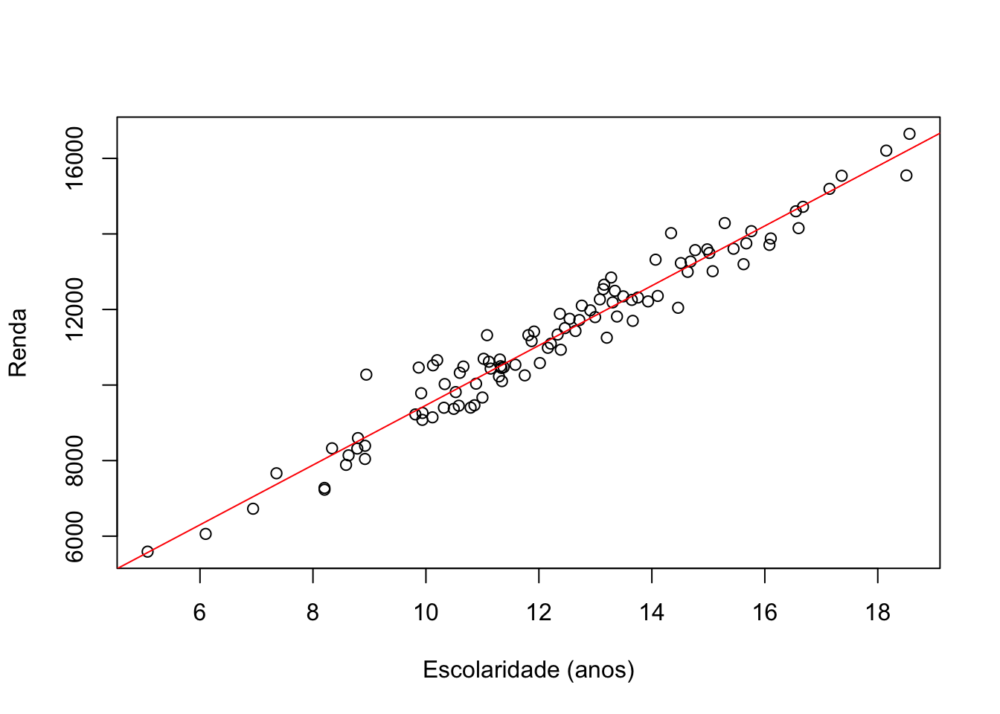
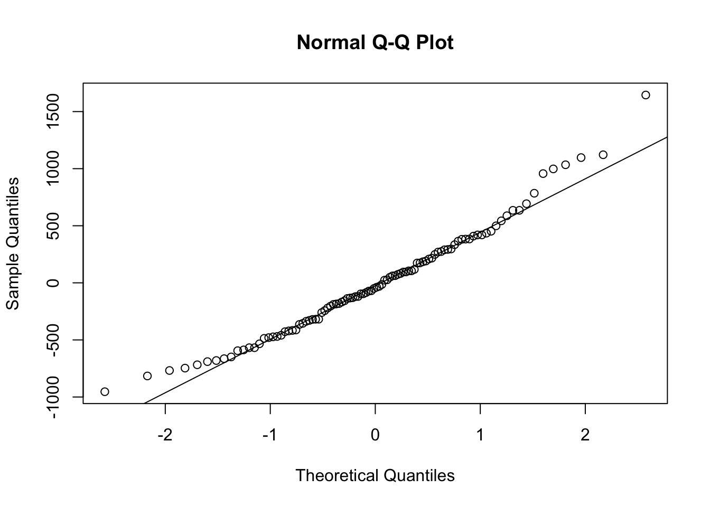
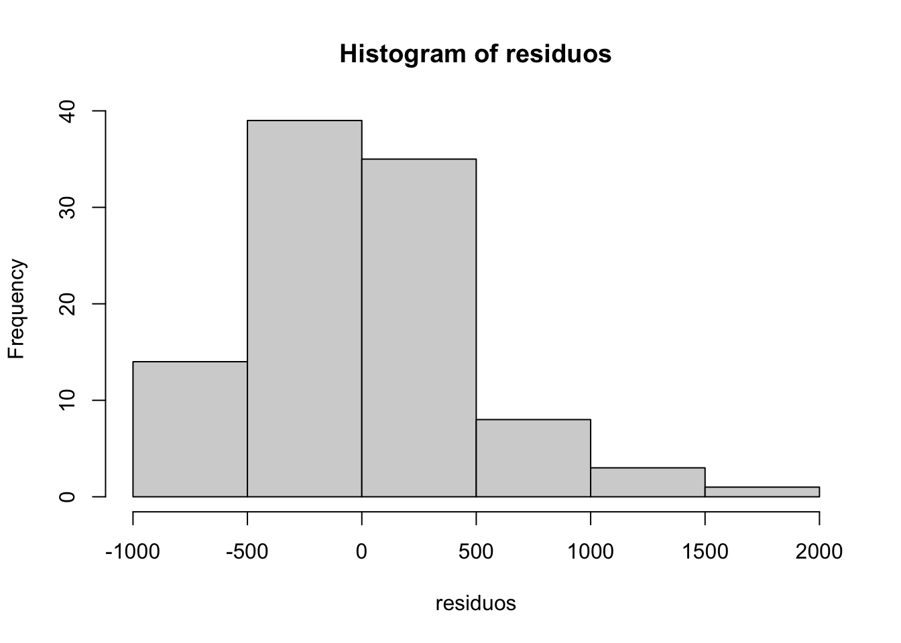
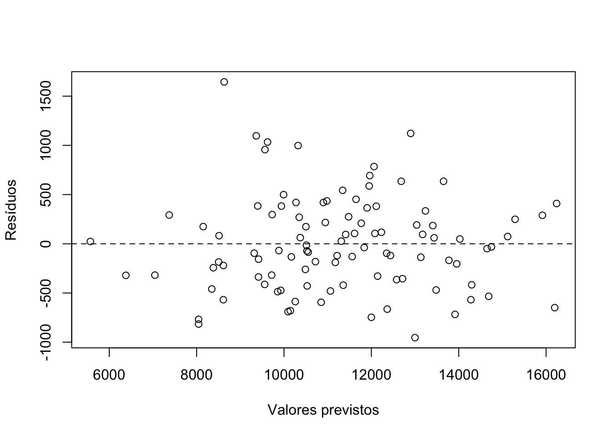

# Definir uma semente para que os números aleatórios sejam reproduzíveis
set.seed(123)
# Gerar 100 valores aleatórios para escolaridade (anos de estudo)
escolaridade <- rnorm(100, mean = 12, sd = 3)
# Gerar a renda a partir de uma relação linear hipotética:
# intercepto = 1500, inclinação = 800, erro com desvio-padrão 500
renda <- 1500 + 800 * escolaridade + rnorm(100, mean = 0, sd = 500)
# Criar o objeto 'dados' com as duas variáveis
dados <- data.frame(Escolaridade = escolaridade, Renda = renda)
# Primeiras linhas do banco
head(dados)Aula 3 — Regressão por MQO e seus pressupostos
1 Exemplo de regressão no R
O código abaixo cria um banco de dados fictício, ajusta um modelo de regressão linear por Mínimos Quadrados Ordinários (MQO) e verifica alguns dos seus pressupostos.
Pergunta de pesquisa: qual a relação entre escolaridade e renda?
Vamos verificar três pressupostos usando os resíduos do modelo:
1) Linearidade da relação entre as variáveis, plotando a relação entre Escolaridade e Renda.
2) Normalidade dos resíduos, usando um gráfico Q-Q (quantile-quantile) e um histograma.
3) Homocedasticidade dos resíduos, plotando os resíduos contra os valores previstos pelo modelo.
Como os resíduos só existem depois que o modelo é estimado, o fluxo é: estimar o modelo, olhar os resíduos e, se os pressupostos estiverem razoavelmente atendidos, interpretar os resultados.
Para um resumo dos conceitos (intercepto, inclinação, erro, resíduo, \(R^2\)) veja o resumo de regressão.
1.1 Criar um banco de dados fictício
1.2 Ajustar o modelo de regressão linear
modelo <- lm(Renda ~ Escolaridade, data = dados)2 Verificação dos pressupostos da regressão
2.1 1. Linearidade da relação entre as variáveis
plot(dados$Escolaridade, dados$Renda,
xlab = "Escolaridade (anos)", ylab = "Renda")
abline(modelo, col = "red")
2.2 2. Normalidade dos resíduos
A normalidade dos resíduos não é necessária para que o estimador de MQO seja não viesado. Ela importa para a validade dos testes t e intervalos de confiança em amostras pequenas; em amostras grandes, o teorema central do limite reduz essa preocupação.
residuos <- residuals(modelo)
qqnorm(residuos)
qqline(residuos)
hist(residuos)
2.3 3. Homocedasticidade dos resíduos (variância constante)
Se os resíduos formam uma “nuvem” sem padrão em torno de zero, a variância parece constante. Um formato de funil indica heterocedasticidade, que não gera viés nos coeficientes, mas torna os erros-padrão convencionais incorretos (nesse caso, usamos erros-padrão robustos).
plot(predict(modelo), residuos,
xlab = "Valores previstos", ylab = "Resíduos")
abline(h = 0, lty = 2)
2.4 Resumo do modelo
library(stargazer)
stargazer(modelo, type = "text")
===============================================
Dependent variable:
---------------------------
Renda
-----------------------------------------------
Escolaridade 791.255***
(17.813)
Constant 1,553.542***
(223.912)
-----------------------------------------------
Observations 100
R2 0.953
Adjusted R2 0.952
Residual Std. Error 485.357 (df = 98)
F Statistic 1,973.120*** (df = 1; 98)
===============================================
Note: *p<0.1; **p<0.05; ***p<0.01Como os dados foram simulados com inclinação igual a 800, a estimativa do coeficiente de Escolaridade deve ficar próxima desse valor.